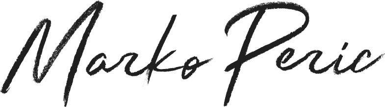

<!DOCTYPE html><html lang="en"></html><head><meta charset="utf-8"><meta name="viewport" content="width=device-width, initial-scale=1, shrink-to-fit=no"><meta name="description" content="Marko Perić portfolio"><meta name="keywords" content="portfolio, Marko, Perić, about, work"><meta name="author" content="Miloš Tomšik"><title>Marko Perić | About</title><link rel="stylesheet" href="css/main.css"></head><body><div class="container-fluid about-wrapper"><div class="container about"><header class="header row"><a class="about__logo bonus-left-padding" href="/index.html"></a><input class="hidden-xs-up" id="hamburger" type="checkbox"><label class="hamburger hidden-md-up" for="hamburger"></label><label class="hamburger__menu"><a class="about__logo hamburger-padding-logo" href="/index.html"></a><div class="hamburger__menu-items"><a class="hamburger__menu-item" href="/index.html">Home</a><a class="hamburger__menu-item active" href="#">About</a><a class="hamburger__menu-item" href="/work.html">Work</a><a class="hamburger__menu-item" href="/contact.html">Contact</a></div><footer class="footer row hamburger-padding-copyright"><span class="about__copyright col">© 2018 Marko Peric</span></footer></label></header><div class="row"><div class="col-md-3 col-sm-12"></div><div class="about__me col-md-8 offset-md-1 col-sm-12"><h2 class="about__hi">Hi,</h2><p class="about__me">I am a <span class="colored">multidisciplinary designer</span>, focused on UX UI Design, based in Switzerland. I am a designer with a lot of passion for digital art.</p><p class="about__me">I can also <span class="colored">code </span>user-friendly interfaces with clean, semantic markup. I love creating user centered, simple, easy to use but efficient websites that solve problems, give great business goals and look awesome.</p><p class="about__me">My favorite everyday tools are <span class="colored">Sketch </span>and Photoshop, above all I'm advanced in coding HTML, CSS and have a great knowledge in Bootstrap and SASS.</p><p class="about__me">I genuinely enjoy solving problems through design to aim at a great user experience.</p><a class="about_download-cv colored" href="http://markoperic.bplaced.net/Marko%20Peric%20-%20Resume.pdf" target="_blank">Download CV</a></div></div><div class="row"><h3 class="about__services-title col-md-3 col-sm-12">Services</h3><div class="col-md-8 offset-md-1 col-sm-12"><p class="about__services-description"><span class="colored">Design </span>- Technology is an integral part of almost every area of our lives, and we need to enjoy it in order to use it. We design digital products for beyond satisfaction to provide enjoyable and meaningful experiences, empowering people to do amazing things.</p><p class="about__services-description"><span class="colored">Development </span>- My main priorities are responsive websites that are effective, have a clean code with cross-browser support and thoroughly testing. Writing clean HTML, separating CSS and implementing Javascript without breaking the code.</p></div></div><div class="row"><h3 class="about__experience-title col-md-3 col-sm-12">Experience</h3><div class="col-md-8 offset-md-1 col-sm-12"><p class="about__experience-description"><span class="colored">Nov 2017 </span>- Present UX UI Designer @ Pexapark AG</p><p class="about__experience-description"><span class="colored">Oct 2016 </span>- Present Freelance UX UI Designer</p><p class="about__experience-description"><span class="colored">Sept 2017 </span>- Nov 2017 UX UI Designer @ DOS Group SA</p></div></div><footer class="footer row"><div class="about__links col"><a class="about__link-item" href="https://dribbble.com/marckoperic" target="_blank">Dribbble</a><span class="about__link-separator">-</span><a class="about__link-item" href="https://www.instagram.com/marckonedesign/" target="_blank">Instagram</a><span class="about__link-separator">-</span><a class="about__link-item" href="https://www.linkedin.com/in/marckoperic/" target="_blank">Linkedin</a><span class="about__link-separator hidden-sm-down">-</span><a class="about__link-item hidden-sm-down" href="https://github.com/marckoperic" target="_blank">GitHub</a><span class="about__link-separator hidden-sm-down">-</span><a class="about__link-item hidden-sm-down" href="mailto:marcko.peric@gmail.com" target="_blank">Email</a></div><span class="about__copyright col">© 2018 Marko Peric</span></footer></div></div></body>